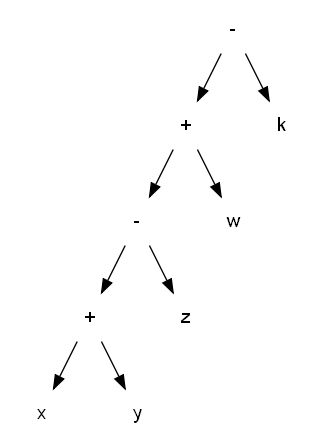
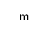
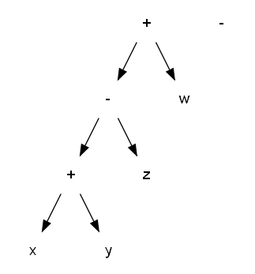
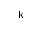

Unification 909
We've barely scratched the surface of unification as implemented in Eq. We now need to digg into the subject by following a tiny example. I've not yet implemented a modulo operator in the language, so it's a nice occasion to implement one ourselves.
Modulo 101
Let's write our modulo in the most straightforward way.
Here we have written a loop within the modintern function, the codition of
the loop is symbolized by the first argument, unifying to a boolean. The rest can be
seen as a local variable, as for the num. We remove the modulo while the rest is still
greater than it. So, now let's try it.
DUH?
We got two errors we some cryptic messages (yes it's in my TODO list to ameliorate them). But what the OMGWTFBBQ!!!!111!!!ELEVEN!!! has happenned?
Modulo 202
The
:= operator let you set the value of a variable.
The right and side of the operator (3 here), is evaluated at the definition site.
Crap.
modintern( false, rest, num ) := modintern( rest - num < num, rest - num, num );
The first arrise when we use the second definition of the function. We already have defined
a part of the function. As the := operator evaluate it's right part, it tries
to unify ( rest - num < num, rest - num, num ) As those variables are not yet
defined, they cannot be reduced to a boolean. And as you can imagine
true =~= (rest - num < num, rest - num, num) is false. (I use =~=
as a shorthand for unification, don't try to use it, it doesn't exist, yet). In the same
way the difinition of the modulo function can only fail.

Modulo 404
(Not Found)
Modulo 505
So, new program :
Notice the new :> operator.
The :> operator is the Lazy attribute operator. It has exactly
the same function as :=, but it doesn't evaluate it's right side. It
kept it's right side frozen, the right side is unfrozen when the function
is called. All the functions in the standard library are defined with the Lazy
operator to avoid problem at definition site.
Unification 606
During the conception of Eq, I wrote an interseting test that I want to share with you.
Notice the x + y and x - y parameters in the definition
of the map function.
The map function in the context of functional languages, is a function which take a set/list of elements, apply an operation on it and return the same structure with it's element transformed by the given operation.
Here we got a set of variables, and we are creating a sort of list/tree of variables.
We link them using + or - operators. Then we want to multiply
all variables by 2, so we map them and apply the function 2.
This example show an important property of Eq. You don't manipulate value, you manipulate expression tree in this language. If you're lucky, your expression tree can be reduced to a single value and thus giving you the impression on working on values for some cases.
All you need is tree (707)
If we reuse the formula :
x + y - z + w - k + m , we can obtain the following
expression tree in memory :

What I'm going to explain here is not always true, Eq reorganize expression, sort them, does whatever it wants to help reduce them. So you can't be sure that the final order will be respected. But for the sake of explanation, let's assume order is preserved.
When map is called the first time, the first equation is applied,
because + unify with +, m
unify with y and x unify with
x + y - z + w - k. Giving two subtrees :
 and 
For the first recursive call, the second equation will be used, leading to two new tree.
 and 
So in fact, the language is powerfull enough to deconstruct expressions and rewrite them. You can react not only to specific value, but to the form of the given formula. To be able to send formula without problem, you have to control their evaluation somehow, this question will be adressed in the next session.
Unification 808
Rollback.
The = is thought to compare equality on value,
but some times you want to check deep equality, like in the
previous sample. The two sub-tree are identical, you could
try to write some weird function deconstructing the two
subexpression to provide equality. Or you can try a very
simple trick.
equal( a, a ) does all the job, the first argument unify himself
with the variable, and then a is substitued by the first argument in the argument
list and in the function body. Then the second argument has a complex tree to
unify to. If it does, the first equation is chosen, giving a deep equality check.
Otherwise, the all accepting clause equal( a, b ) is selected
and reject the equality.
Revolution 909
If you're like a red tomato now, just take a break. Revolution 909 is all about tomatoes. Don't forget to peal away the skin.